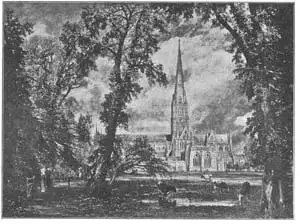
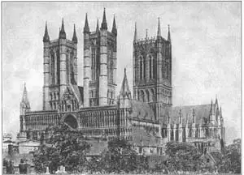

75
COUNTRY CATHEDRALS
乡村大教堂

DID you notice in the pictures in the last chapter that all the cathedrals seem to be in cities? Almost all the French Gothic cathedrals are in cities or towns. They have very little open ground around them. Dwelling houses and shops are crowded about them so close that it is often hard to get a good view of the outside of a French cathedral.
English Gothic cathedrals are just the opposite. They were generally built out in the country, so most of the English cathedrals have plenty of open space around them— lawns and trees instead of stores and crowded streets. They stand in beautiful settings which make the buildings themselves look even more beautiful.
Now, a good question is, why should cathedrals be in the cities in France and in the country in England?
Well, in France the cathedrals were built by the people of the towns. They were used much more often than a church is used now. The French cathedrals were the schools, the theaters, the public meeting places of the people, besides being houses for prayer and worship. They had to be in the center of things, because they were so important in the lives of the people of the towns.
But in England the cathedrals were usually built by the monks for their own use. The village people had parish churches where they could worship. Of course ordinary peoplecould worship in the cathedrals, but the cathedrals were built chiefly for the monks. As monasteries were places where the monks could get away from the world outside, so monasteries were more often built in the country away from the cities. And of course the monastery or abbey church was built in the country, too.
That is one difference between English Gothic and French Gothic -one in the country, the other in the city.
Here is another difference.
English cathedrals are much longer for their width than French cathedrals are. An English cathedral looks long and narrow, while a French cathedral looks short and wide. The eastern ends of the English cathedral where the monks worshiped had to be much longer because there were so many monks. The French cathedrals with their crowds of people who came to listen to their priest, needed a wider and shorter space so all the people could hear him. Each country shaped its cathedrals to fit the use to which the cathedrals were put.
Here is another difference.
Most of the French cathedrals have doors at their western ends opening into the nave and aisles. Most of the English cathedrals have doors at the side, besides those at the end, with little porches to keep out the wind and rain.
And here is yet another difference.
Most of the French Gothic cathedrals have two towers on their western ends above the doors. But many of the English Gothic cathedrals have their main tower over the crossing of the transept and nave, and sometimes no towers at all on the western end.
So you can see again very readily that the same kind of architecture is different in different countries. No doubt an Englishman thinks English Gothic is best, and no doubt a Frenchman prefers French Gothic.
An important thing to remember about Gothic cathedrals is that few cathedrals were built all at one time. In many cases the cathedral was begun as a Romanesque building and finished as a Gothic building, years later. The great Durham Cathedral, which was built in England as a fort against the Scotch as well as a church, has a Norman nave but Gothic towers.
Durham is plainer, less decorated on the outside, than other cathedrals and for this reason it looks strong and solid and is very dignified.

No.75-1 SALISBURY CATHEDRAL（索尔慈伯里大教堂）
FROM A PAINTING BY CONSTABLE（选自康斯太勃尔的绘画作品）
Courtesy of The University Prints
As time went on, the Gothic style changed in England. There are really four kinds of Gothic there, corresponding to four different periods of time. Sometimes it took so long to build a cathedral that all four periods of architecture can be found in one building.
In the thirteenth century churches were built in Early English Gothic. Salisbury Cathedral, which has the tallest spire in England, is Early English.
In the fourteenth century the style was Decorated Gothic. The nave and east end of Lincoln Cathedral is in the Decorated style.

No.75-2 LINCOLN CATHEDRAL, ENGLAND（英国林肯大教堂）
Courtesy of The University Prints
In the fifteenth century the style was Perpendicular Gothic. Perpendicular is a long word, meaning straight up and down. The towers of Canterbury Cathedral are Perpendicular Gothic.
And last came the Tudor period. The famous chapel of Henry VII in Westminster Abbey is Tudor.
Westminster Abbey itself is more like French cathedrals than most English buildings, perhaps partly because it is in a city—London. It is famous as the burial place of many of England’s great men.
If you keep a scrap-book you might try to find for it pictures of two other famous cathedrals. One is Peterborough Cathedral with huge pointed archways over the door— archways that are as high as the roof. The other is Wells Cathedral which has a famous tower over the crossing that I’m pretty sure you will like. If you haven’t a scrap book, why not get one? You will find it fun hunting for pictures that you want to paste in. You might make it a game to see how long it will take you to get pictures of eight different English cathedrals for your scrap-book. You can find the pictures in magazines and in railroad and steamship catalogues. Then when you go to England some day, each cathedral you see will seem like an old friend.
【中文阅读】
你有没有注意到，上一章图片所展示的大教堂几乎都坐落在城市里？法国几乎所有的哥特式大教堂都在城里或是镇上。教堂的周围没什么空地。附近拥挤的住宅和商店让你很难一睹法国大教堂的外观全貌。
英国的哥特式大教堂则恰恰相反。它们都在乡村，所以大部分英国大教堂的周围都有足够的空地——不是商店或拥挤的街道，而是草地和树木。如此美丽的背景，更加烘托出大教堂的壮丽。
现在，有一个问题问得好，为什么法国的大教堂是在城区，而英国的大教堂却在乡下呢？
原因是，法国的大教堂是市民们建造的。当时使用教堂的频率比现在高得多。法国大教堂在当时除了是人们祈祷和敬拜的地方，还是学校、剧院和公共集会的场所。教堂是一切事物的中心，因为它们在城镇居民生活中的地位实在是太重要了。
但在英国，大教堂都是修士们建造的，而且只为自己所用。村子里的人一般都就近到自己的教区教堂敬拜。当然，普通老百姓也可以进大教堂参加敬拜，但这些大教堂主要是为修士们建造的。因为修道院是修士们可以远离尘世的地方，所以就把修道院越来越多地建造在乡下，远离城市，而修道院的教堂也就建在乡下了。
这就是英国哥特式教堂与法国哥特式教堂的一个不同点——一个是在乡村，一个是在城市。
还有一个不同点。
英国大教堂要比以宽为主的法国大教堂狭长。英国的大教堂看起来是长而窄，而 法国的大教堂看起来是短而宽。修士们所敬拜的地点是在教堂的东端，不得不建得狭长点，因为修士们人多；而法国的信众却喜欢围坐听道，所以教堂就要建得短而宽，以便人人都能听见。每个国家都是根据自己实际需要的形状来修建教堂的。
还有一个不同点。
大部分法国大教堂的西侧都有通向中殿和门廊的大门；而大部分英国大教堂除了建有后门外，还有边门。供人躲避风雨的门廊一般都偏小。
还有一个不同点。
法国大部分哥特式教堂的西端的大门上都建有两座塔；而英国大部分大教堂却只在中殿和翼部的交叉口上方建一座主塔，而西端有时候根本就不造任何塔。
所以你就很容易看到，同一种建筑风格，在不同的国家，产生了不同的形式。难怪英国人认为英国的哥特式建筑是最优秀的，而法国人更喜欢法国的哥特式建筑。
还有一个需要记住的要点，那就是哥特式大教堂只有极少数是在同一个时期建造的。在许多情况下，大教堂一开始都是按罗马式风格而建，到几年后竣工时却变成了哥特式建筑。英国雄伟的达拉谟大教堂有教堂的作用，但为抵御苏格兰人的入侵，也就兼代要塞的功能。它的中殿呈诺曼式，却高耸着哥特式风格的塔。
达拉谟大教堂与其他教堂相比，外表朴实，较少装饰，正因为如此，它才显得坚固有力，气质优雅。
随着时间的流逝，英国的哥特式风格发生了变化。英国现在的哥特式建筑共有四种风格，与四个时期相对应。有时候建造一座教堂要花很长时间，而一座教堂却能让人看到四个时期的风格。
十三世纪的大教堂是按英国早期哥特式风格而建。那拥有最高尖塔的索尔慈伯里大教堂，就是按英国早期的哥特式风格而建的。
十四世纪的建筑风格则称为装饰性哥特式。林肯大教堂的中殿和西端都属于这种风格。
十五世纪的建筑风格叫做垂直形哥特式。“垂直形”这个词，意指垂直向上或往下。坎特伯雷大教堂的塔就是按垂直型哥特式风格而建。
最后来到的是都铎王朝时期。在威斯敏斯特大教堂的著名的亨利七世礼拜堂就是都铎王朝时期的哥特式风格。
威斯敏斯特大教堂与英国其他建筑物相比更像法国风格，这其中的部分原因也许是与坐落的城市——伦敦有关。这里因埋葬了许多英国伟人而著名。
如果你喜欢剪贴，可以试着找出另外两座著名大教堂的图片。一座是彼得伯勒大教堂，正门上面有一排排大而尖的拱道——与屋顶差不多高。另一座是威尔士大教堂。它在双翼交叉口的上方有一座著名的塔，我确信小朋友们一定会喜欢的。如果你没有剪贴簿，为什么不试着做一本呢？如果你仔细搜寻可以贴到剪贴簿上的画，会发现这非常有趣。你可以把它当做一个游戏来看待，看看为你的剪贴簿找到八种不同的英国大教堂需要多长时间。你可以在杂志上、铁路海报上，以及轮船的分类图片上寻找。然后，等你哪一天有机会去英国，再看到图片上的大教堂时，你会像看到老朋友一样亲切。